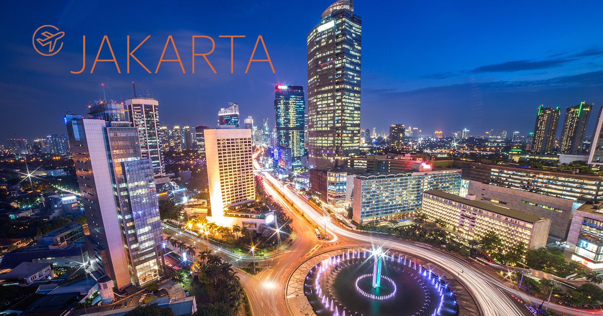
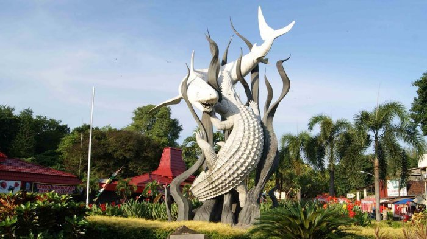

1.Jakarta
Daerah Khusus Ibukota Jakarta (DKI Jakarta) adalah ibu kota negara dan kota terbesar di Indonesia. Jakarta merupakan satu-satunya kota di Indonesia yang memiliki status setingkat provinsi. Jakarta terletak di pesisir bagian barat laut Pulau Jawa. Dahulu pernah dikenal dengan beberapa nama di antaranya Sunda Kelapa, Jayakarta, dan Batavia. Di dunia internasional Jakarta juga mempunyai julukan J-Town, atau lebih populer lagi The Big Durian karena dianggap kota yang sebanding New York City (Big Apple) di IndonesiaJakarta memiliki luas sekitar 661,52 km² (lautan: 6.977,5 km²), dengan penduduk berjumlah 10.187.595 jiwa (2011). Wilayah metropolitan Jakarta (Jabodetabek) yang berpenduduk sekitar 28 juta jiwa, merupakan metropolitan terbesar di Asia Tenggara atau urutan kedua di dunia.

2.Daera istimewa Yogyakarta
Daerah Istimewa Yogyakarta (Jawa: Dhaérah Istiméwa Ngayogyakarta) adalah Daerah Istimewa setingkat provinsi di Indonesia yang merupakan peleburan Negara Kesultanan Yogyakarta dan Negara Kadipaten Paku Alaman. Daerah Istimewa Yogyakarta terletak di bagian selatan Pulau Jawa, dan berbatasan dengan Provinsi Jawa Tengah dan Samudera Hindia. Daerah Istimewa yang memiliki luas 3.185,80 km2 ini terdiri atas satu kotamadya, dan empat kabupaten, yang terbagi lagi menjadi 78 kecamatan, dan 438 desa/kelurahan. Menurut sensus penduduk 2010 memiliki populasi 3.452.390 jiwa dengan proporsi 1.705.404 laki-laki, dan 1.746.986 perempuan, serta memiliki kepadatan penduduk sebesar 1.084 jiwa per km2

3. Surabaya
Kota Surabaya adalah ibu kota Provinsi Jawa Timur, Indonesia, sekaligus kota metropolitan terbesar di provinsi tersebut. Surabaya merupakan kota terbesar kedua di Indonesia setelah Jakarta. Kota ini terletak 796 km sebelah timur Jakarta, atau 415 km sebelah barat laut Denpasar, Bali. Surabaya terletak di pantai utara Pulau Jawa bagian timur dan berhadapan dengan Selat Madura serta Laut Jawa. Surabaya memiliki luas sekitar 350,54 km² dengan penduduknya berjumlah 2.765.487 jiwa (2010). Daerah metropolitan Surabaya yaitu Gerbangkertosusila yang berpenduduk sekitar 10 juta jiwa, adalah kawasan metropolitan terbesar kedua di Indonesia setelah Jabodetabek. Surabaya dilayani oleh sebuah bandar udara, yakni Bandar Udara Internasional Juanda, serta dua pelabuhan, yakni Pelabuhan Tanjung Perak dan Pelabuhan Ujung.
